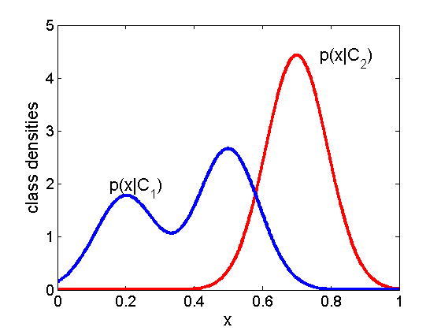

Generative vs Discriminative classifier illustration
figure;
hold all;
domain = 0:0.001:1;
f1 = @(x)gausspdf(x,0.7,0.09.^2);
f2 = @(x) 0.4*gausspdf(x,0.2,0.09.^2) + 0.6*gausspdf(x,0.5,0.09.^2);
linespec = {'LineWidth',3};
plot(domain,f1(domain),'-r',linespec{:});
plot(domain,f2(domain),'-b',linespec{:});
set(gca,'XTick',0:0.2:1,'YTick',0:5,'XLim',[0,1],'YLim',[0,5],'box','on','FontSize',14);
xlabel('x','FontSize',16);
ylabel('class densities','FontSize',16);
annotation(gcf,'textbox',[0.2366 0.4 0.096 0.07927],...
'String',{'p(x|C_1)'},...
'FontSize',16,...
'FitBoxToText','off',...
'LineStyle','none');
annotation(gcf,'textbox',[0.7127 0.794 0.096 0.07927],...
'String',{'p(x|C_2)'},...
'FontSize',16,...
'FitBoxToText','off',...
'LineStyle','none');
